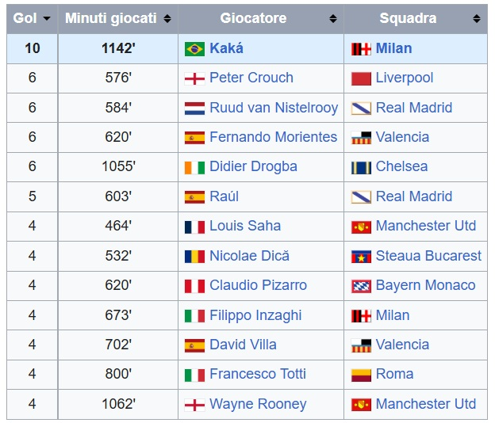

Una strada non molto facile
Dopo la sconfitta traumatica della serata nel 25 maggio 2005 a Istanbul,
una partita "rubata" in maniera scandalosa contro il Barcellona nel 19 aprile 2006, e l'addio di Sevcenko e Rui Costa in
estate, tutto questo, il Milan, nella stagione 2006/07, dove partire pure con le sanzioni causate dal famoso scandalo.
Il Milan era finito nel tritacarne di Calciopoli con due conseguenze: otto punti di penalizzazione in campionato,
una preparazione sommaria e una Champions League conquistata solo a fine agosto dopo due partite contro una Stella Rossa che
a livello di condizione era più avanti dei rossoneri.
A novembre, il Milan era nella colonna di destra della classifica di Serie A e con diversi titolarissimi infortunati.
Il mese dopo inizia la grande cavalcata rossonera. il Milan innesta la marcia giusta superando (0-0 e 1-0 a San Siro)
il Celtic Glasgow negli Ottavi di finale.
Eliminato il Bayern Monaco (2-2 a San Siro firmato Pirlo e Kaká e 2-0 all'Allianz Arena con reti di Seedorf e Inzaghi)
Qui, il Milan supera il Manchester United che, dopo avere avuto la meglio nella gara d'andata all'Old Trafford
(3-2), viene nettamente sconfitto per 3-0 a San Siro nella "Partita Perfetta" con lo spettacolo puro di Kakà.
Il 23 maggio 2007 allo Stadio Olimpico di Atene, dove a differenza della Finale di Istanbul di due anni prima,
questa volta, nessun colpo di scena, niente champagne dopo il primo tempo, a vincere è il Milan,
che batte per 2-1 il Liverpool con una doppietta di pippo Inzaghi, cui ha fatto seguito un gol di Dirk Kuijt.
Kaká si laurea inoltre capocannoniere del torneo con 10 gol.

